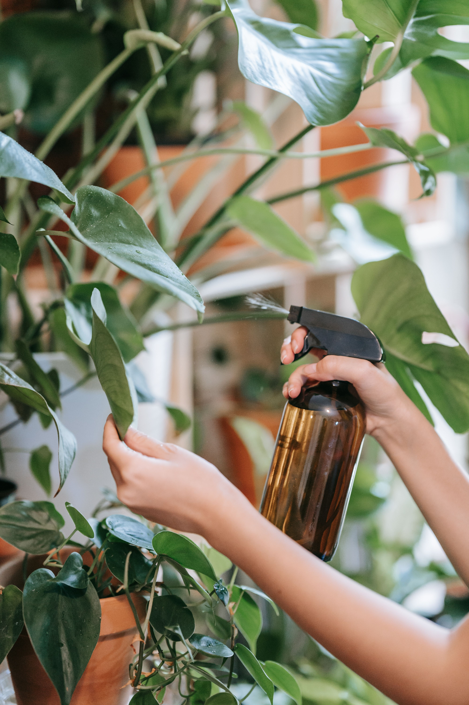
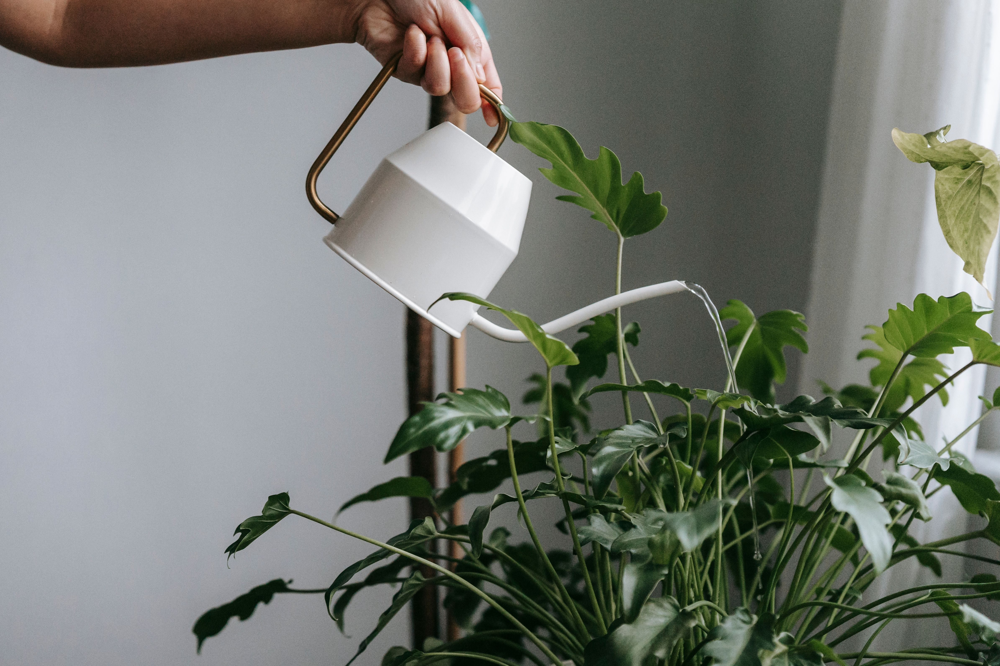

Check The Soil
The growing medium is one of the simplest places to start when deciding whether a plant needs water. Check the soil before reaching for the watering can.
Different plants dry at different rates. Pot size, sunlight, temperature, humidity and the type of growing medium can all change how quickly moisture is lost.
Avoid watering just because it is a particular day. Check the plant and soil conditions first.
Observe The Plant
Leaves and overall plant appearance can provide useful clues about a plant's condition. Regular observation helps you notice changes earlier.
Do not rely on one sign alone. Consider the appearance of the plant together with soil condition, light and the growing environment.
What To Observe
- Check the condition of the leaves.
- Look at the soil before watering.
- Observe recent growth.
- Consider the amount of available light.
- Check the plant's overall appearance.

Pay Attention To Drainage
Good drainage helps prevent excess water from remaining around plant roots. Containers should allow water to move away appropriately.
A decorative pot can look beautiful, but the container setup still needs to support suitable drainage for the plant.
Check Moisture
Look at the soil before adding more water.
Use Drainage
Make sure excess water has somewhere to go.
Watch Changes
Regularly observe leaves and overall plant condition.
Know Your Plant
Match watering habits to the specific plant.
Build A Simple Watering Routine
Regular observation is one of the easiest ways to become more confident with watering. Check your plants at suitable intervals and learn their individual patterns.
Keep your watering routine flexible. Indoor plants, balcony plants and outdoor plants can all dry at different rates.
Water when your plant needs it, not simply because the calendar says so.BloomNest Gardening Team
Plant Watering Checklist
Soil
Check the growing medium before adding more water.
Leaves
Observe leaves and overall plant appearance.
Drainage
Make sure excess water can leave the container.
Routine
Learn your plant's individual watering pattern.